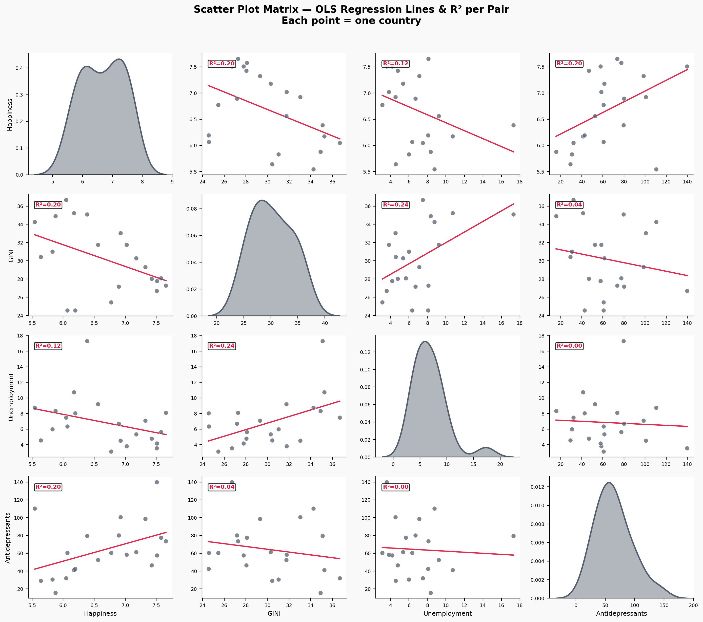

Why do the happiest countries in Europe consume the most antidepressants? A data-driven investigation across 21 nations.
Finland, Denmark, Iceland, Norway, Sweden — year after year, these Nordic nations top the World Happiness Report. Their citizens report the highest life satisfaction on Earth. And yet, these same countries also lead the OECD in antidepressant consumption, prescribing up to 140 defined daily doses per 1,000 people every single day.
This is the Paradox of Happiness: the places where people say they are happiest are also where they take the most medication for depression. Are the happiness rankings a lie? Are these countries hiding collective misery behind a pharmaceutical veil? Or is something more subtle at work?
To investigate, we assembled data on 21 European countries from four sources: the World Happiness Report (2015–2020), World Bank GINI coefficients (inequality), World Bank unemployment rates, and OECD antidepressant prescription statistics. We averaged across years to capture structural patterns rather than year-to-year noise.
The chart below makes the paradox unmistakable. On the left, countries ranked by happiness. On the right, the same countries ranked by antidepressant usage. Notice how the red bars — the Scandinavian nations — cluster near the top of both lists.
A correlation of R = 0.45 is not trivial. It means that, on average, every step up in national happiness is associated with more antidepressant prescriptions — the exact opposite of what naive intuition would predict. Let's dig deeper into the data to understand why.
Before searching for explanations, we need to understand what we're working with. The distributions below reveal the spread of our four metrics across 21 nations. Happiness is relatively concentrated (most countries between 6 and 7.5), but antidepressant use spans an enormous range — from barely 16 DDD/1,000/day in Latvia to a staggering 140 in Iceland. Inequality (GINI) and unemployment show their own characteristic spreads, with Southern European outliers pulling the tails.
The scatter matrix below maps every pairwise relationship among our four variables. Each cell shows an OLS regression line and its R² — the proportion of variance explained. Several patterns emerge:
The paradox holds: even after controlling for the obvious economic suspects (inequality, unemployment), the positive association between happiness and antidepressants persists. Something else is driving it.

Geography tells a clear story. The choropleth below paints each nation by its happiness score, and a striking north–south gradient emerges. The Nordic and Northwestern countries — Finland, Denmark, Netherlands, Sweden — glow with high values. As you move south and east — through France, Italy, Spain, Hungary, Portugal — scores drop steadily. Use the dropdown tabs to switch between Happiness, GINI, Unemployment, and Antidepressants — and watch how the geographic patterns overlap.
To move beyond simple correlations, we used K-Means clustering to discover natural groupings among the 21 countries based on all four metrics simultaneously. We evaluated K = 2 through 8 using the silhouette score (a measure of how well-separated the clusters are). K = 2 scored highest (0.362) but offered too little nuance; K = 3 provided the best trade-off between interpretability, cluster balance, and score (0.316) — with no singleton clusters. K ≥ 5 produced meaningless one-country clusters. PCA (Principal Component Analysis) then projects these three groups into two dimensions for visualisation, capturing 76% of total variance.
The clusters tell a compelling story:
A single cross-section might be a fluke. But what if we watch the paradox unfold year by year? The animated scatter below tracks each country from 2015 to 2020 through Unemployment × Happiness space, with bubble size encoding antidepressant usage. Press play and notice: the Nordic countries remain anchored in the top-left corner (low unemployment, high happiness, large bubbles) throughout the entire period. The paradox is structural, not momentary.
We've established the paradox and shown it's real, persistent, and geographic. But we haven't explained why. For that, we turn to the European Social Survey (Round 9, 2018) — one of the highest-quality cross-national surveys in the world, with ~50,000 respondents answering detailed questions about their trust in institutions, social connections, and civic engagement.
From six ESS variables, we constructed two composite indices:
The result is the single most striking finding in our analysis:
Institutional Trust explains 75% of the cross-country variation in happiness (R² = 0.749, p < 0.0001).
This dwarfs every other predictor we examined. Not GINI (R² = 0.39), not unemployment (R² = 0.18), not GDP. Trust is the master variable. Countries where people trust their government, their neighbours, and their democratic institutions are overwhelmingly happier.
And here's the key to resolving the paradox: these same high-trust societies have destigmatised mental healthcare. When you trust your doctor, your health system, and your society not to judge you, you're far more likely to seek help for depression — and that help often comes in the form of antidepressants. The high prescription rates in the Nordics don't signal hidden misery; they signal a society that takes mental health as seriously as physical health.
The radar chart below shows how each cluster scores across all six raw ESS variables (min-max normalised to 0–1). Cluster 0 — our "happy, medicated" Nordic archetype — dominates on every single dimension of trust and social engagement. They discuss politics more, meet friends more often, participate in more social activities, trust people more, trust politicians more, and are more satisfied with their democracy.
Clusters 1 and 2 — the Southern and Eastern groups — score lower across the board. The gap isn't in wealth or weather; it's in social fabric.
We've told our story — now it's your turn to explore. The interactive bubble chart below lets you swap the X-axis between six different variables: economic indicators (Unemployment, GINI) and social ones (Institutional Trust, Social Connection, Trust in People, Satisfaction with Democracy). Bubble size always encodes antidepressant consumption; colour shows the K-Means cluster. What patterns can you find?
Try this: Switch to "Trust in People" and watch how cleanly it separates the happy from the unhappy. Then try "GINI Index" — the relationship is there but messier. Trust tells a tighter story than economics alone.